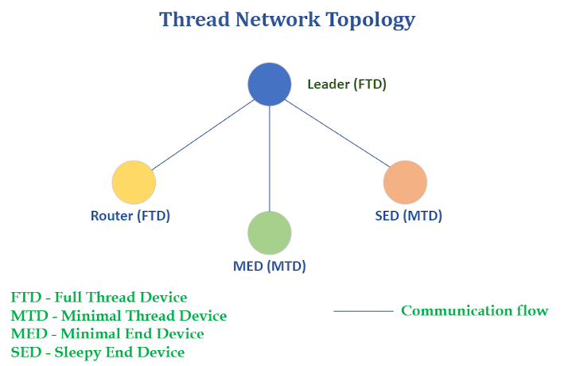

UDP Application Description
At regular intervals of 5 seconds, the FTD leader sends a broadcast UDP packet to all thread devices on the network. This includes FTDs, MTDs, and SEDs, which will receive the broadcast data and respond with a unicast packet to the leader.
For the network to function properly, it is necessary to have a designated thread leader that all other nodes can connect to. In the UDP demo application, a maximum of four nodes can be connected to an FTD device.
The FTD’s and MTD’s will receive the UDP broadcast data immediately as their receivers are in RX mode even when idle.
During idle periods, the receivers of the SED are turned off and they enter a deep sleep mode for a pre-configured duration of 5 seconds, as shown in the example application. Every 5 seconds, the SED will wake up and check for any pending data packets in the leader. If any data is received, the SED will send a unicast UDP packet back to the leader for each data packet received.
LED indications
The RGB Green LED will flash to indicate the transmission of a packet on all devices. Similarly, the blue user LED will blink to indicate the receipt of a packet.